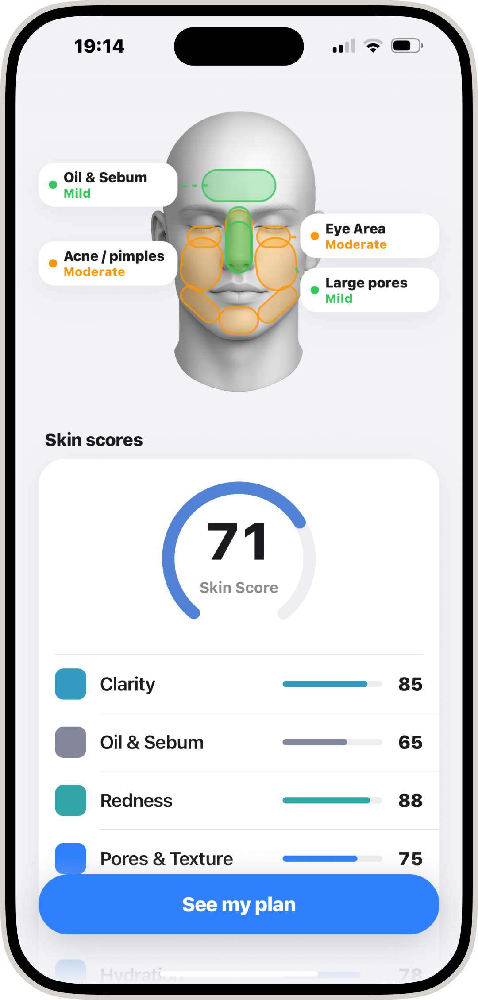
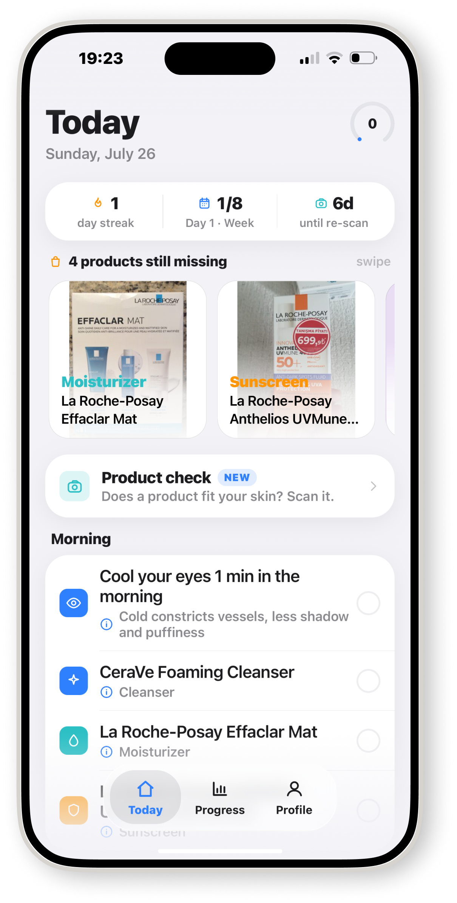
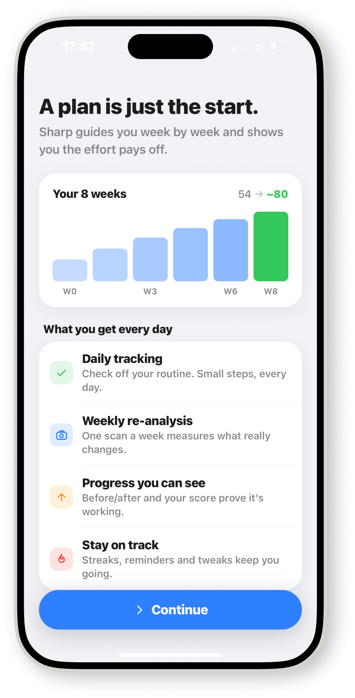
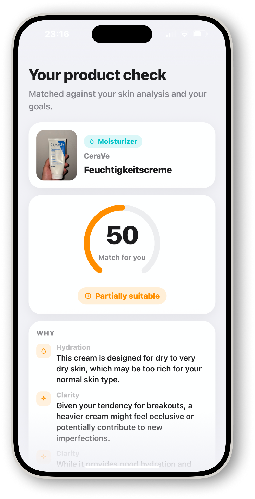
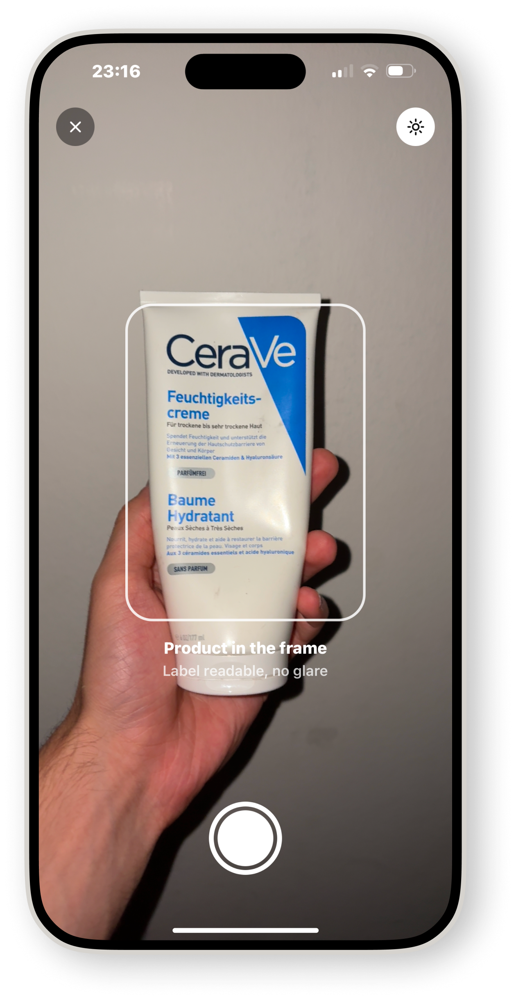

Scan your face. Follow a routine that adapts every week.




Hold the camera at eye level and turn your head. Sharp checks your lighting, captures several angles and maps clarity, oil, redness, pores, eye area and hydration onto your face.
Sharp checks your lighting, detects your head pose and fires the shutter itself. Same conditions every week.
Clarity, oil, redness, pores, eye area and hydration, each out of 100 and mapped onto the zones of your face.
The scan becomes a plan: what to do, what it fixes, and what your score should look like by week eight.

Morning and evening steps, each one explained in plain language. Check them off, keep the streak, and watch the plan tighten around what your skin actually needs.
Morning and evening nudges, a Live Activity in the Dynamic Island while your routine is running, and a reminder when the weekly re-scan is due.
Your 3 morning steps are ready.
Cleanse, treat, moisturize. Short and effective.
See how much changed this week.
Point the camera at any bottle. Sharp reads the label, matches it against your scan and your goals, and tells you why it fits or why it doesn't. Concrete picks for every step, at any budget.
One scan a week under the same conditions. Your score curve and the before/after are the proof that the routine works, or the signal to change it.
Free to download. Your first scan takes 30 seconds.
Download on theApp Store